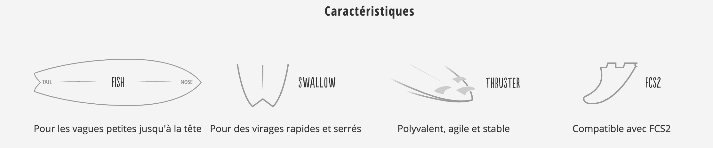

Bienvenue dans notre boutique de surf
Découvrez notre sélection d'équipements de surf de haute qualité.
Nos produits

Planche de surf
Lib Tech Lost Rnf 96 5'9 Planche de surf
879,95€ Ajouter au panierTVA incl. frais de port non incl.
Délai de livraison seulement 4 à 6 jours ouvrés
Seulement 1 disponible(s)
La nouvelle machine fun par excellence
Laissons la légende Matt Biolos s'exprimer : Fidèles au design original mais mis à jour avec 25 ans d'expérience dans la construction de planches et testés par Kolohe, Coco, Ian, Crosby et « invités », nous sommes convaincus que la RNF '96 dépassera les attentes et sera une machine amusante complète pour un large éventail de surfeurs. ~ Matt Biolos
La RNF est de retour et meilleure que jamais. Matt Biolos et certains des meilleurs surfeurs du monde sont convaincus que ce shape, qui a déjà bouleversé le monde du surf dans sa forme originale, aura à nouveau un impact majeur. Assez de volume, un outline large et un swallow tail étroit et rapide font de la RNF une attrapeuse de vagues aux ambitions très performantes. Elle fonctionne aussi bien dans les petites vagues que dans les vagues difficiles.
ECO IMPACTO - Procédé de fusion par thermopression Plus avancé technologiquement - meilleur pour l'environnement : Lib Tech a changé tout ce que tu as toujours su sur les planches de surf. Chaque élément utilisé dans la construction de cette planche de surf est nouveau pour l'industrie du surf. La construction de Lib Tech combine les meilleures caractéristiques de l'époxy et du polyester : durabilité, vivacité, flexibilité et amortissement. L'utilisation de la fibre de magnésium améliore la résistance globale aux chocs, et le longeron en carbone power spine correspond précisément au flex d'une nouvelle planche en polyester haute performance et le maintient pendant toute la durée de vie de la planche. En outre, la fibre de verre G incorporée fournit un renforcement léger.
Grâce à la bio-résine utilisée, cette planche a une durée de vie plus longue que l'époxy et est beaucoup plus respectueuse de l'environnement. Le noyau de mousse Eco Nitrogen construit en cellules de forme elliptique agit comme un pilier, offrant une dureté du haut vers le bas et une résilience aux chocs latéraux. Il contient 25 à 40 % de matières recyclées, et 100 % du reste est recyclé. Le panneau de puissance Hexzylon Thermo-Fusion Honey Comb est résistant aux chocs et aux bosses et absorbe les vibrations pour un ride en douceur.
Système de dérives FOC "Freedom of Choice" Avec le système d'ailerons à fente réglable Foc II, tu peux positionner les Lib RRIP, les ailerons FCS II ou les ailerons FCS en les adaptant de façon optimale à tes besoins. Et surtout, le leash plug avec de la goupille avec coupe faite aluminium d'aviation garde ton leash bien attaché à ta board.
Merci de bien vouloir contacter notre service client si vous souhaitez une taille de planche de surf non disponible sur notre site. Nous prendrons contact avec notre fournisseur afin de voir si nous pouvons obtenir la taille désirée.
